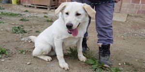
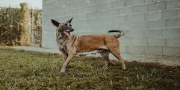
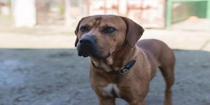
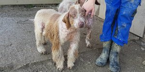
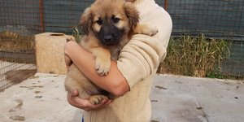
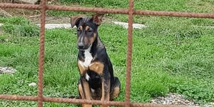
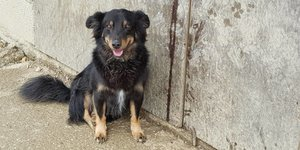
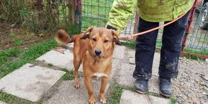
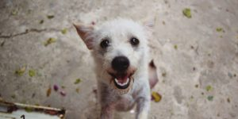
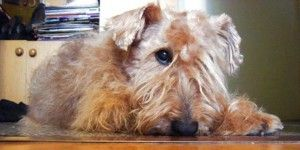

ROĐ 9/2018 Predivan,znatiželjan i aktivan mladi retriver-tornjak mješanac od 8 mjeseci traži novi dom.

Lena je belgijska ovčarka ROĐ 2010. Došla je k nama sa teškim lomom noge i u lošem stanju. Lena se oporavila i traži svoje ljude. Poslušna je i voli ljude.

Jakov je pametan i jako drag pas. Vrlo je miran i poslušan. Danima smo mu nosili hranu prije nego smo zadobili njegovo povjerenje i uspjeli ga dovesti u sklonište.

Mali Huan je pun energije i sreće.Traži svog čovijeka za igranje i mazenje.ROĐ 11.4.2018.

Berni,rod.2005, dosta aktivan i jako voli drustvo ljudi, velika maza.

ROĐ 2007. Vrlo drag i miran starček čija je zadnja želja da nađe dom.

Ali je presladak. Bio je udomljen i vlasnici su zbog selidbe odlučili da ne može s njima ostati pa su ga nakon 3 godine vratili.

Fabrizio voli ljude vise nego samog sebe. Trazi stalno drustvo i mazenje. On se slaze sa svima i jako je aktivan i poslusan.

Astor je jako aktivan mladi pas.Voli se maziti i igrati. ROĐ 02/2017.

Cezar se zna lijepo ponašati u kući/stanu i traži udomitelja s iskustvom s psima. Cezar ne podnosi mace!